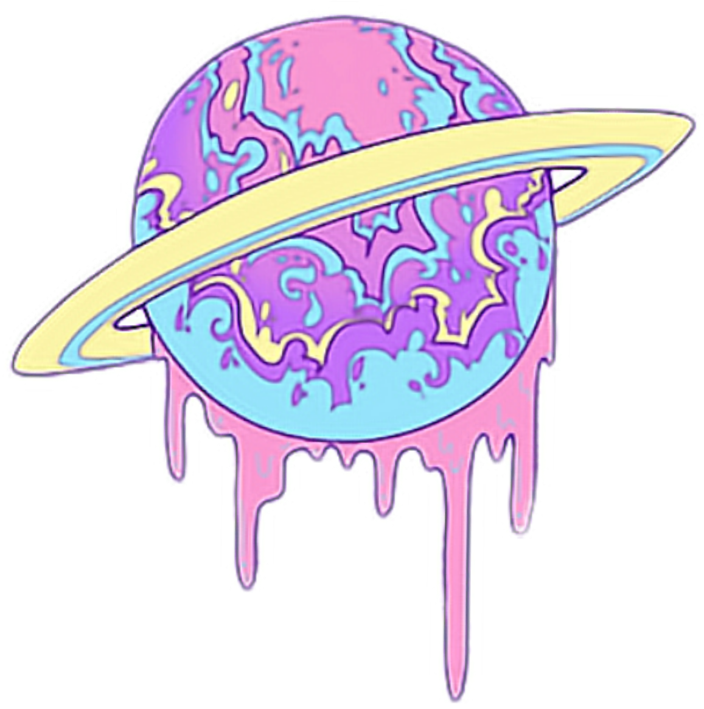

Hello World!
A Bit About Me...
My name is Nicole. I am a 4th-year AGPM major. In my major, I like making a lot of analog games, so board games and card games. Although I've taken some programming classes (mainly in Python), I don't think I'm very good at it. In this class I want to improve my programming skills so I feel more confident when coding.
So far classes have been going well. I have this class as my only class on Mondays, Wednesdays and Fridays and all my other classes are in a row on Tuesday and Thursday. I start with my Game Design class from 3:20 to 4:55, then a Character Creation class from 5:20 to 6:55, and finally section for this class from 7:10 until whenever it's over. Lots of fun, lots of work. I've also been doing the Inktober challenge meaning I draw every day. Usually this just results in me staying up to late drawing. I could stop at any time, but I also just want the practice. In addition to drawing every day, I've been trying to make my drawing a full body figure using references I've found on Pintrest. Although it's a lot of work, I feel like I have been improving, so it's worth it in a way.